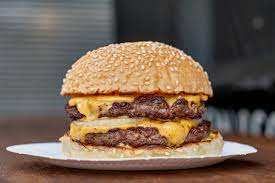

Burger

Description
Make your own patties with this new delicious burger recipe.
Just like a Big Mac but healthier, cheaper, and tastier.
Ingredients per 1 burger
For the patty:
- 100g beef mince
- 1 tsp rosemary
- 1 tsp black pepper
- 1 tsp oregano
For the sauce:
- 1 tsp mayo
- 1/2 tsp sweet piccalilli
- 1/8 tsp white vinegar
- Pinch of white pepper
- 1/2 tsp onion powder
- 1/2 tsp garlic powerder
For the burger:
- 1 cup lettuce
- 1/2 white onion
- 1 gherkin
- 1 brioche bun
- 1 slice American cheese
Recipe
- Mix all ingredients for sauce together, and set aside
- Put 100g of mince into a mixing bowl, and herbs / spices and fold until smooth
- Dice half onion and fry half, set half aside
- Air fry for 5 mins, flip burger, air fry for 5 more mins
- Once patty has been air fried for 10 mins, put the slice of American cheese on top and leave for 2 mins
- Put bun in toaster for 2 mins
- Take buns out of toaster and arrange as per below
- Top bun
- Gherkin
- American cheese
- Patty
- Onion
- Lettuce
- Sauce
- Bottom bun
- Enjoy! :)
Back